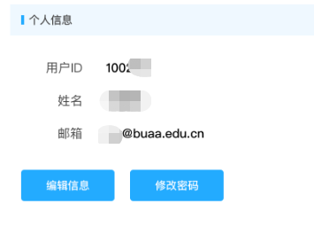
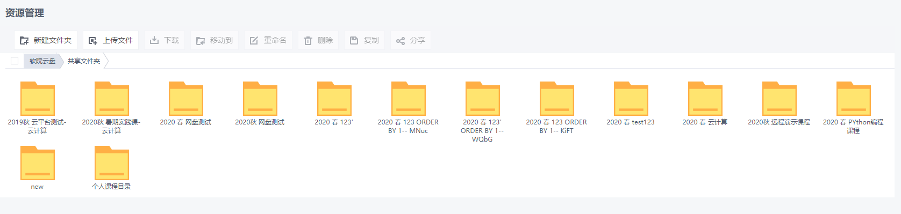

软件学院云管理平台用户手册—学生版
一、登录系统
1.1 用户登录
通过统一认证登录或选择本系统登录(独立数据库)，输入用户名、密码，输入验证码点击登录。
注：通过统一认证登录的用户如无本地账号，按照提示要求操作。

1.2修改用户信息
通过系统右上角用户个人信息进入修改页面

修改个人信息、登录别名、修改密码（保证密码的复杂度要求）一定要设置邮箱，忘记密码找回的主要依据。
1.3退出登录
为了安全，结束使用点击右上角退出登录。
1.4找回密码
用户忘记密码通过首页找回密码功能，输入用户ID，即可通过设置的邮箱找回密码。
二、申请使用云主机
2.1获取虚拟机
虚拟机是用户获取云计算资源的重要途径，可用于办公，科研，教学等，获取的途径为: 虚拟机管理->新增虚拟机。

2.2管理虚拟机
在虚拟机管理界面可以浏览个人名下所有虚拟机，虚拟机的主要新能指标直接可以查看，主要的操作有：开机，关机，修改虚拟机配置，删除虚拟机，对虚拟机进行快照管理（危险操作之前可以考虑此功能），访问虚拟机请点击查看按钮。

2.3 访问虚拟机
在虚拟机管理中选在查看，获取虚拟机的访问权限，不同类型的虚拟机访问方式有所不同
2.4 快照管理
三、实验任务
3.1 查看任务
选择实验信息查看实验任务列表和所在课程信息。
3.2 开启实验
进入实验详情页，查看实验任务，如分配了虚拟机直接访问完成实验。
3.3互评功能
实验或作业如果开启了互评操作，则在实验结束后开启互评功能，用户需要领取互评任务进行互评操作，完成提交即可。
3.4 历史实验
在实验信息页面，通过切换学期查看历史学期课程和实验信息。
四、我的云盘
云盘功能为教师用户提供存储数据的服务，包含两个默认文件夹，一个是私人文件夹，一个是课程文件夹，课程目录下为创建课程时生产的数据会自动保存到共享文件夹。
4.1、查看资源
点击我的云盘，其中共享文件夹为课件相关资源的转存目录，便于学生查阅课程资料。个人文件夹为面向学生的私有目录，用于个人文件存取的网盘目录。


五、注意事项
1、获取的IP地址不正确问题
本系统采用内置DHCP服务，如果获取地址不正确，尝试关机后重新开机正常可以获得IP地址，如果因地址资源不足造成的问题请联系管理员处理。
2、Windows用户访问虚拟机的工具
（1）访问windows虚拟机: windows远程桌面（mstsc）、Finalshell、teamview 、vncSever等
（2）访问Linux虚拟机：Finalshell 、vncserver，Putty，Secure Shell
（3）Apple用户：parallels client 、SSH
3、Linux 文本模式下获取北航上网认证的方法
1、文本模式下获取认证
1、curl -X POST –data
"action=login&ac_id=1&user_ip=&nas_ip=&user_mac=&save_me=1&ajax=1&username=youracount&password=yourkey" https://gw.buaa.edu.cn:801/include/auth_action.php -k
2、wget ftp://10.251.254.105/beihangLogin
chmod +x beihangLogin
./beihangLogin login -u youracount -p yourpwd
2、links https://gw.buaa.edu.cn/srun_portal_success?ac_id=1&theme=buaa
3、w3m https://gw.buaa.edu.cn/srun_portal_success?ac_id=1&theme=buaa
2、开启图形化界面 SSH到虚拟机，开启vnc vncserver，开启windows远程访问等，之后在通过浏览器访问gw.buaa.edu.cn。
4、学生登录问题
首次登录如无权限需等待课程教师导入选课名单之后激活账号。